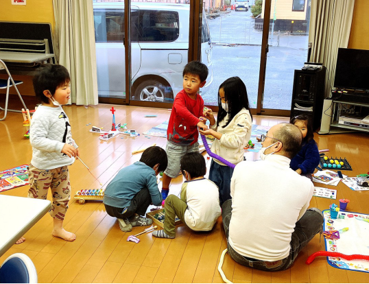
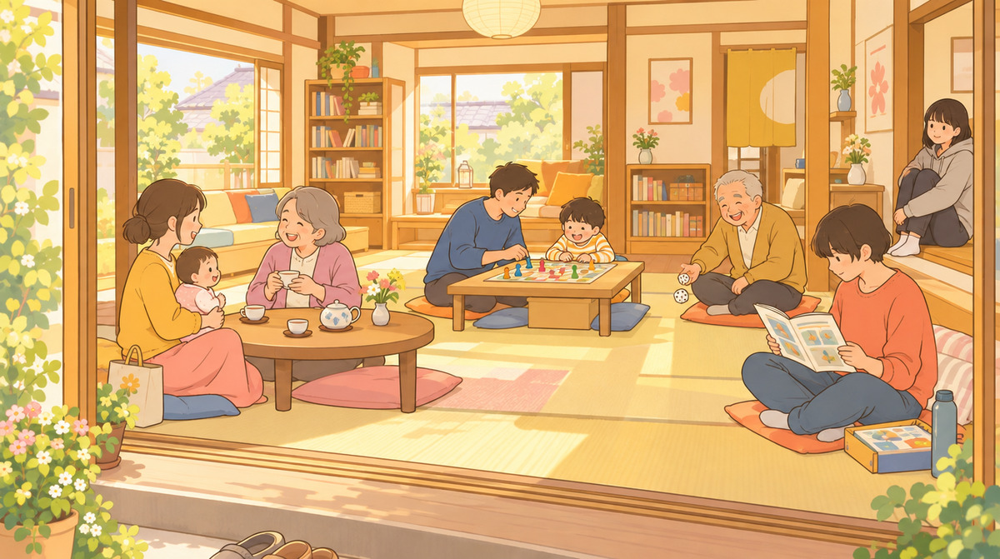
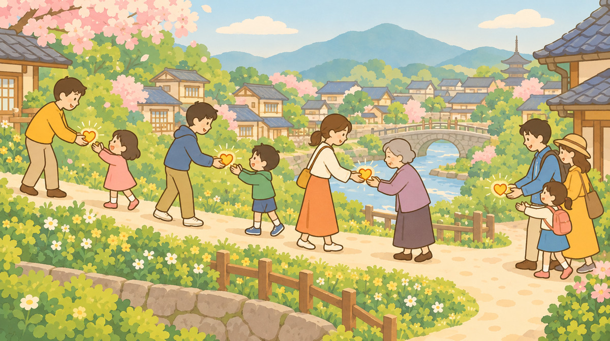
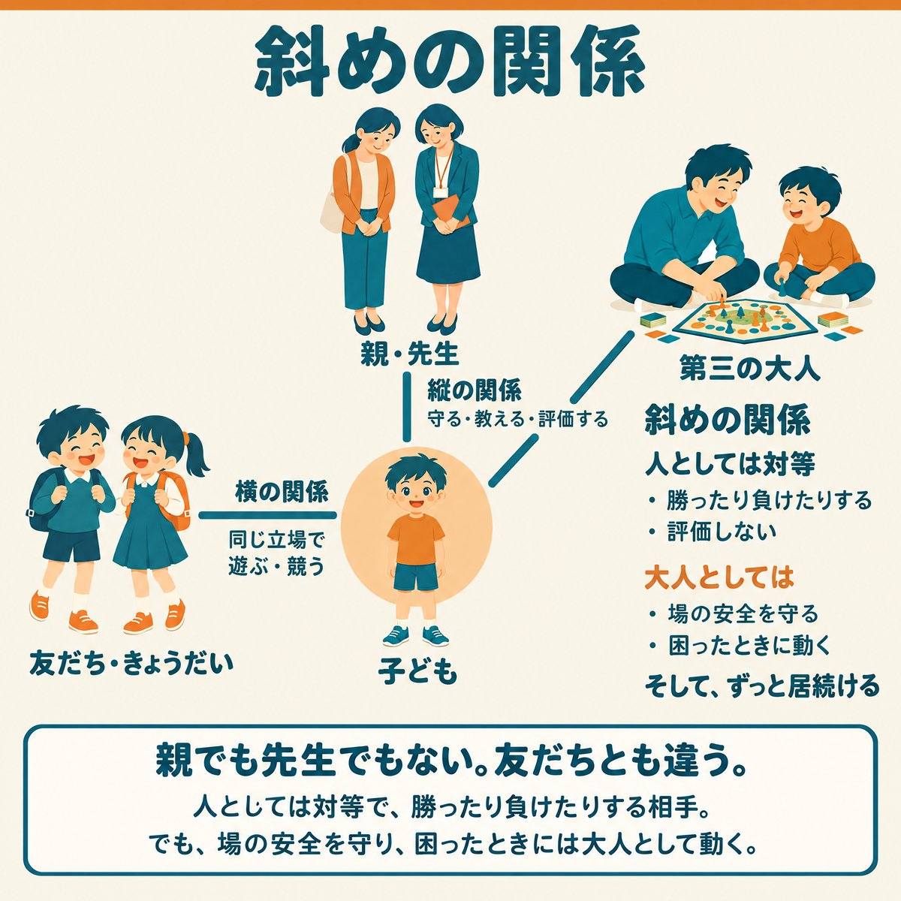
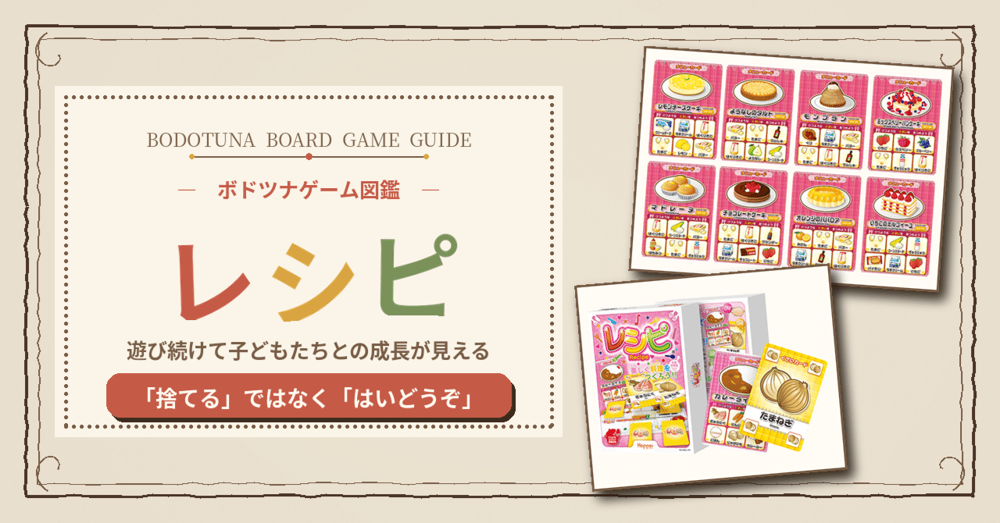
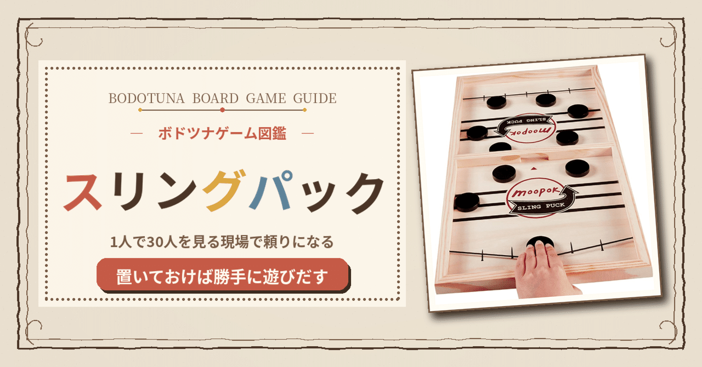
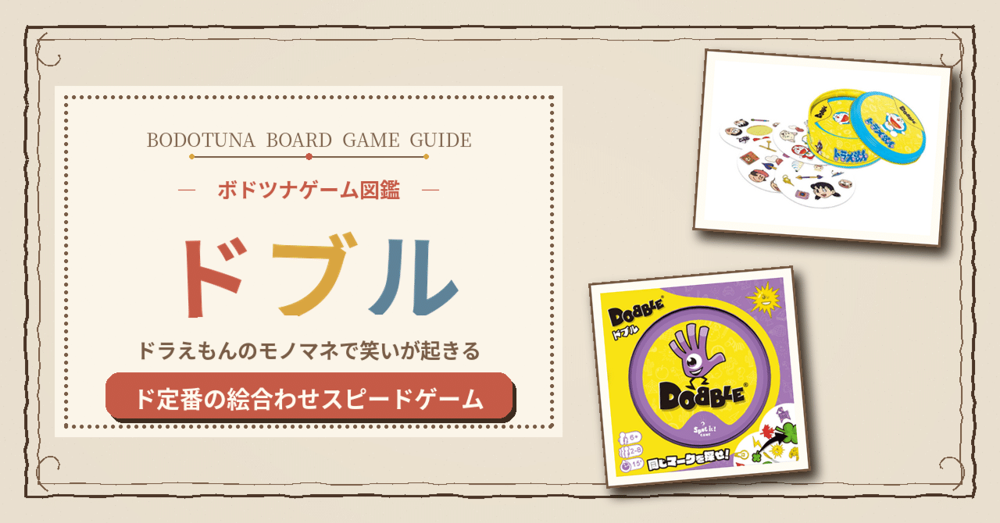
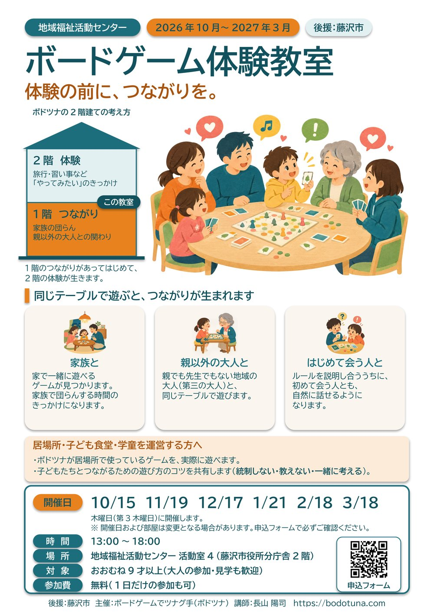
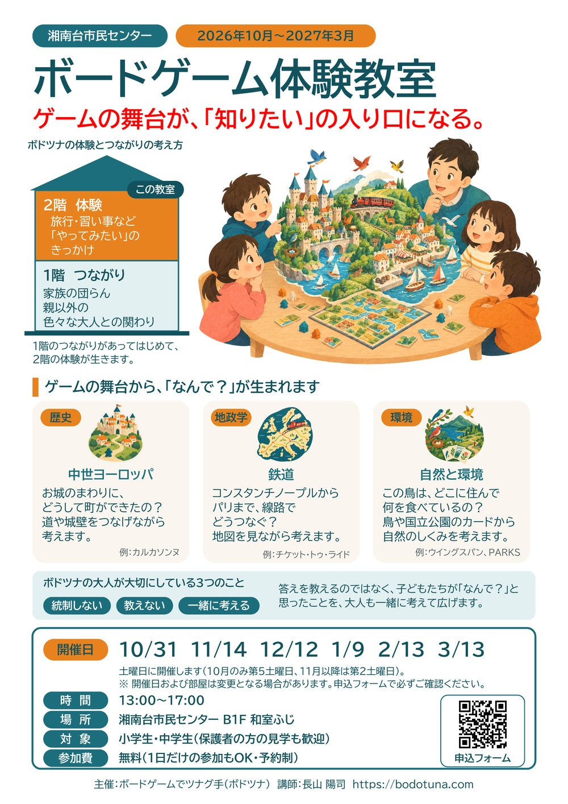

藤沢市を中心に、子育て中の保護者・不登校の子どもたち・HSP・LGBT当事者など、
相談相手や理解者に恵まれない方々が頼れる『安全基地』を運営しています。

頼れる人が、近くにいない時代に。
私が住んでいるアパートの下の部屋から、赤ちゃんの泣き声が聞こえてきました。毎日毎日、毎晩毎晩、赤ちゃんは激しく泣いていて、それをあやしているお母さんの声も聞こえてきました。2階の私の部屋まで聞こえてきて、目が覚めるくらいです。
ある朝、出勤のため外に出ると、1階の奥さんが赤ちゃんを抱っこして立っていました。「こんにちは」と声をかけると、目にクマができ、やつれた表情で「すみません、いつもうるさくて」と小さな声で返事をしてきました。引っ越してきた時に挨拶をした時とはまるっきり違う表情で、だいぶ精神的に参っているようでした。
夜になって私が仕事から帰ると、その家の旦那さんが玄関先で煙草を吸っていました。「奥さん大丈夫ですか？ だいぶ参ってるようでしたけど」と伺うと、旦那さんは拍子抜けするほど軽いノリで「えー、だいじょうぶっしょ〜」と笑って返してきました。
育児に対する姿勢は、男女でこうも違うものなんだと痛感しました。
先日、その部屋から荷物を運び出していたので尋ねると、奥さんの体調が悪く、実家近くに引っ越すことにしたそうです。頼れる人が近くに住んでいて良かった——私はそう安堵しました。
でも、もしご両親に頼れなかったら、どうなっていたのでしょうか。
そうして起きているのが、ネグレクトやDVではないでしょうか。
子育てに限らず、世の中には相談しにくいことや、理解者に恵まれないことが沢山あります。引きこもり、子どもの貧困、自傷行為、HSP、LGBT、蛙化現象——
もしもボードゲームを使った『遊びの場』が、相談しにくいことを相談できるコミュニティになったとしたら、気持ちが楽になる人がいるかもしれません。ネグレクトやDVのような事件が1件でも減るかもしれません。
気楽に集まれる場所。集まっても気楽な場所。
それをつくりたくて、ボドツナは生まれました。
ボードゲームでツナグ手 代表 長山 陽司
ボードゲームを使ったイベントを通じて、頼れる場所をつくります。

ボドツナの目的は、ボードゲームを使ったイベントを通じて、以下のような困りごとを抱える方々が頼れる『安全基地』を創造することです。
居場所に来て、何かを返してもらうことは求めていません。今すぐにでも、何年か先でも、一生のうちに一度も返さなくていいのです。
もしいつか、ここで受け取ったものを返したいと思う日が来たら、私たちにではなく、その時あなたの目の前にいる誰かに返してください。私たちはそうやって、次の人に送られていくつながりが、地域に増えていけばいいと思っています。

家族やみんなで一緒に遊べるゲームが見つかったら、それが一番うれしいことです。
みんなで遊んだことを覚えていてくれたら、それが一番うれしいことです。

図をタップすると大きく表示されます人としては対等で、勝ったり負けたりする相手です。でも、場の安全を守り、困ったときには大人として動きます。
ボドツナの大人は、子どもたちにとって親でも先生でもなく、友だちとも違う「第三の大人」です。ボードゲームでは手加減せずに遊び、子どもを評価しません。そして、同じ場所に通い続けます。
藤沢市内で、月10回以上のイベントを開催しています。
レインボースマイル湘南主催の子育てひろば＆フリースペース。子ども食堂も併設しています。
藤沢市 七ツ木市民の家にて。1歳のお子様からシニアまで遊べるフリースペース。参加無料・予約不要。
駄菓子のついでに、親子で楽しめるボードゲームを体験できます。ドキワクランド駐車場利用可。
地域福祉活動センター（藤沢市役所分庁舎・藤沢市後援）と湘南台市民センターで開催しています。大人も子どもも同じルールで、本気で遊ぶ教室です。
子どもたちと一緒にボードゲーム制作・動画制作を体験するプログラム。生きづらさを抱える方の社会との接点づくりも。
居場所イベントで使っているゲームを、noteで詳しく紹介しています。

「捨てる」ではなく「はいどうぞ」。遊び続けて子どもたちとの成長が見えるお料理ゲーム
noteで読む
1人で30人を見る現場で頼りになる、手軽な2人用ゲーム
noteで読む
モノマネで笑いが起こせ！ ファシリテーター力が試される定番ゲーム
noteで読むnoteのボドツナゲーム図鑑マガジン で随時更新中。
全記事を読む →藤沢市内の2会場で、それぞれ月1回開いています。参加は無料です。
ボドツナは、子どもの育ちを「つながり」と「体験」の2階建てで考えています。1階のつながりがあってはじめて、2階の体験が生きてきます。ボードゲーム体験教室は、会場ごとに1階と2階のそれぞれを入り口にしています。

フライヤーを拡大 →地域福祉活動センター（藤沢市役所分庁舎）
家族と、親でも先生でもない地域の大人と、はじめて会う人と、同じテーブルで遊びます。家で一緒に遊べるゲームが見つかり、家族で団らんする時間のきっかけにもなります。
居場所・子ども食堂・学童を運営する方は、ボドツナが居場所で使っているゲームを実際に遊べます。子どもたちとつながるための遊び方のコツ（統制しない・教えない・一緒に考える）も共有します。

フライヤーを拡大 →湘南台市民センター
お城のまわりに、どうして町ができたのか（カルカソンヌ）。線路でどうやって町と町をつなぐのか（チケット・トゥ・ライド）。この鳥は、どこに住んで何を食べているのか（ウイングスパン、PARKS）。
ゲームの舞台から子どもたちが「なんで？」と思ったことを、答えを教えるのではなく、大人も一緒に考えて広げます。
※ 開催日および部屋は変更となる場合があります。申込フォームで必ずご確認ください。
この教室では、子どもに人権やルールを「教える」ことはしていません。教えると、子どもは「言われたから守る」で止まってしまうからです。
代わりに、大人が子どもと同じルールで、手加減なしに本気で遊びます。大人も負けます。そのとき子どもに届くのは、「自分はこの場で対等に扱われている」「自分は尊重されるべき存在だ」という感覚です。他の人を大切にする気持ちは、まず自分が大切にされた経験からしか育ちません。
ルールについても同じです。ボードゲームのルールは、誰かを管理するためのものではなく、全員が楽しむために必要なものです。だから子どもは、ルールを「守らされる」のではなく、「楽しいから守る」ところから始められます。順番を譲る、負けた子に声をかける、初めての子にルールを教える——誰も言わないのに、そうする子が出てきます。
私たちは、他の人を思いやる気持ちは、規則で守らせるものではなく、安心して自分でいられるつながりの中で自然に育つものだと考えています。この教室は、その土台をつくる場所です。
※ 何かの能力を伸ばすための教室ではありません。「うちの子は勝ちにこだわりすぎる」「負けると崩れてしまう」という子も、そのままで大丈夫です。負けても関係が何も変わらない経験を、何回も積める場所にしています。
地域の支援団体と連携しながら活動しています。
主催：いじめ防止ファシリテーター りーさん。御所見スマイルカフェを共催しています。
藤沢市と周辺の居場所運営団体のネットワーク。お近くで開催されているイベントが見つかります。
駄菓子＆金魚のお店で、ボードゲーム体験イベントを提供しています。
東京・神保町の就労移行支援施設。ボドツナのオリジナルゲーム「ねこのて」のキャラクターデザインを担当いただきました。
運営：HSP当事者の方。私たちのイベント運営アドバイスをいただいています。
ボドツナの居場所活動は、皆さまの応援で続いています。
居場所活動の運営費に充てさせていただきます。毎月の寄付（マンスリーサポーター）なら、来月もその先も居場所を開き続けられます。少額からの応援も大歓迎です。
毎月／今回だけ 寄付するイベント運営のお手伝いをしてくださる方を募集しています。子ども好き・ボードゲーム好きの方、大歓迎です。
イベント参加・運営協力・取材のご依頼など、お気軽にお問い合わせください。
1営業日以内にご返信いたします。